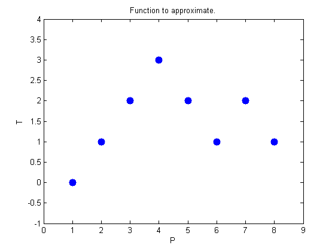
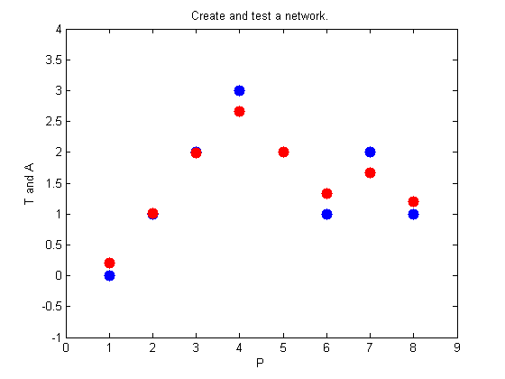
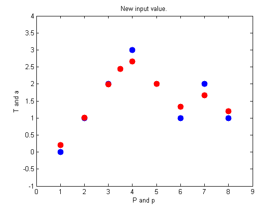
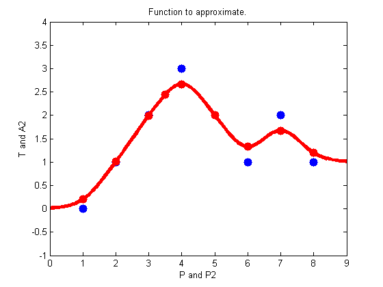

GRNN Function Approximation
This demonstration uses functions NEWGRNN and SIM.
Here are eight data points of a function we would like to fit. The functions inputs P should result in target outputs T.
P = [1 2 3 4 5 6 7 8]; T = [0 1 2 3 2 1 2 1]; plot(P,T,'.','markersize',30) axis([0 9 -1 4]) title('Function to approximate.') xlabel('P') ylabel('T')
We use NEWGRNN to create a generalized regression network. We use a SPREAD slightly lower than 1, the distance between input values, in order, to get a function that fits individual data points fairly closely. A smaller spread would fit data better but be less smooth.
spread = 0.7; net = newgrnn(P,T,spread); A = sim(net,P); hold on outputline = plot(P,A,'.','markersize',30,'color',[1 0 0]); title('Create and test a network.') xlabel('P') ylabel('T and A')
We can use the network to approximate the function at a new input value.
p = 3.5; a = sim(net,p); plot(p,a,'.','markersize',30,'color',[1 0 0]); title('New input value.') xlabel('P and p') ylabel('T and a')
Here the network's response is simulated for many values, allowing us to see the function it represents.
P2 = 0:.1:9; A2 = sim(net,P2); plot(P2,A2,'linewidth',4,'color',[1 0 0]) title('Function to approximate.') xlabel('P and P2') ylabel('T and A2')